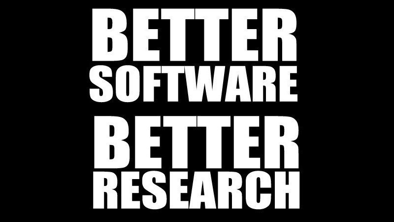

RSE 2.0
Mark Woodbridge, Imperial College London
deRSE19 – Potsdam – 6 June 2019
Introduction
- I lead the RSE team at Imperial College London
- I have previously been a Computer Scientist, software engineer and bioinformatician
- I starting working as an RSE ~17 years ago
Purpose of this talk
- RSE remains an emerging practice/role/profession
- Much effort (rightly) focused on bringing software engineering best practices into research
- Can we now look to the future, identify prevailing trends and prepare accordingly?
- These are subjective, speculative opinions intended (only!) to foster reflection & discussion
Agenda
- Trends
- Technology development
- Software engineering
- Research practices
- Wider issues
- Implications
- RSE Groups
- Individual RSEs
- Researchers, institutions and funders
- Conclusions
Trends: Technology
- Disciplines, communities, languages and codes
- Established vs emerging
- Infrastructure/services, use cases, funding models
- Legacy vs novel
- Pace of change
- Compute capability/accessibility, tools
Python: onwards and upwards
Python, the fastest-growing major programming language, has risen in the ranks of programming languages in our survey yet again
Trends: Software Engineering
- Past: Version control
- Present: Build scripts, tests, CI
- Future: Software quality assurance
Software in research
While the importance of in silico experiments for the scientific discovery process increases, state-of-the-art software engineering practices are rarely adopted in computational science
Johanson and Hasselbring: Software Engineering for Computational Science: Past, Present, Future
Learning-based development
This new paradigm of software creation will require a radical rethinking of the ancestral software engineering and imperative programming practices that have been developed in the second half of the last century.
Erik Meijer: Machine Learning: Alchemy for the Modern Computer Scientist
Data-driven programming
… our approach is to specify some goal on the behavior of a desirable program, write a rough skeleton of the code that identifies a subset of program space to search, and use the computational resources at our disposal to search this space for a program that works
Andrej Karpathy: Software 2.0
Computational intelligence
It’s the pattern of technology today, and it’s going to increasingly be the pattern of technology in the future: we humans define what we want to do—we set up goals—and then technology, as efficiently as possible, tries to do what we want.
Stephan Wolfram: A World Run with Code
Trends: Research
- Data-driven: plan, perform and analyse
- Daphne Ezer and Kirstie Whitaker: Data science for the scientific life cycle
- Interdisciplinary: common infrastructure, workspace, framework
- Collaborative: distributed research, data gathering and software development
- Integrity: repeatability and reproducibility
Trends: General
- Quantified impact
- Skills gap (acquired vs required)
- Expectations of usability/a11y/security/privacy
- Growth in industrial research
- Recognition of role, influence beyond research
- Appreciation that diversity can improve outcomes
Implications: RSE groups (1)
- Broader services
- UCL-RITS AI Studio: “consultancy service in artificial intelligence (AI) and data science”
- Infrastructure: CI, GPUs, notebooks, storage
- Scalable activities
- Less pairing and “product development”
- More resources, exemplars, training, community building, self-service…
Implications: RSE groups (2)
- Quantify impact/benefits
- HPC utilisation, source control adoption, reproducibility, code citations…
- Allocate (more) staff time for L&D, prototyping
- (Re)structure groups appropriately
- Daniel Katz et al: Research Software Development & Management in Universities
- Produce less code, do more code reviews
SLDC and technical debt
However, the code itself is not intrinsically valuable except as tool to accomplish some goal. Meanwhile, code has ongoing costs. You have to understand it, you have to maintain it, you have to adapt it to new goals over time. The more code you have, the larger those ongoing costs will be.
Eric Lee: Source Code Is A Liability, Not An Asset
Implications: RSEs (1)
- Be prepared for continuous learning
- Consider specialisation
- Role, discipline, domain and/or technology
- Seek a mentor
- There are more candidates than ever before!
- UKRSE and deRSE can enable this
Implications: RSEs (2)
- Data science and/or ML will play some role in most projects
- Kirstie Whitaker at al: The Turing Way - A handbook for reproducible data science
- Imperial College London/Coursera: Mathematics for Machine Learning
- Microsoft Research: Software Engineering for Machine Learning
- CPU/GPU/TPU, serverless, cloud
Research Engineering
we have unified our Research Data Scientist and Research Software Engineer roles to a common JD … it’s all a spectrum.
James Hetherington, 22 February 2019
Implications: RSEs (3)
- Notebooks, executable articles/code, UI frameworks
- Containers (Docker, Singularity?)
- Automated QA, CI
- Mozilla Iodide
- eLife reproducible documents
- Diego Alonso Álvarez: GUIs for Python (UKRSE19)
WebAssembly
If WASM+WASI existed in 2008, we wouldn’t have needed to created Docker. That’s how important it is. Webassembly on the server is the future of computing.
Solomon Hykes, 27 March 2019
Implications: Institutions
- Foster networks
- Jeremy Cohen: Building Research Software Communities (deRSE19)
- Provide career paths (and benefits!)
- James Smithies: King’s Digital Lab Career Development
- Recruitment challenges likely to limit growth
- Provide training (early-career, knowledge gaps)
Policy Conclusion (1)
Universities should also be encouraged to create more research software groups.
European Commission Open Science Monitor: Recognising the Importance of Software in Research – Research Software Engineers (RSEs), a UK Example
Implications: Funders
- Expect RSE involvement (and diversity)
- Demand software management plans
- Acknowledge challenges of sustainability
- Mandate reproducible results
- Provide more fellowships, infrastructure…
Policy Conclusion (2)
Funding bodies should include RSEs in the preparation and execution of funding calls
European Commission Open Science Monitor: Recognising the Importance of Software in Research – Research Software Engineers (RSEs), a UK Example
Stack Overflow Developer Survey 2019
Developers…
- …with the lowest job satisfaction include academic researchers, educators, scientists
- …who work with data … are high earners for their level of experience, while academic researchers and educators are paid less
- …working in academia and data scientists are looking for work at higher proportions
Policy Conclusion (3)
a drastic change in the way researchers are incentivised needs to be implemented
European Commission Open Science Monitor: Recognising the Importance of Software in Research – Research Software Engineers (RSEs), a UK Example
Conclusions
- Optimistic opinion: we are approaching the end of the beginning for RSE
- Next: Embrace emerging demands and opportunities to truly accelerate research
- Suitably equipped RSEs will play an essential role in digital (i.e. software- and data-driven) science

Questions?
m.woodbridge@imperial.ac.uk mwoodbri.github.io/deRSE19/RSE2.0 (CC BY 4.0)
Many thanks to the RSE Team and Jeremy Cohen at Imperial College for their help with preparing this talk